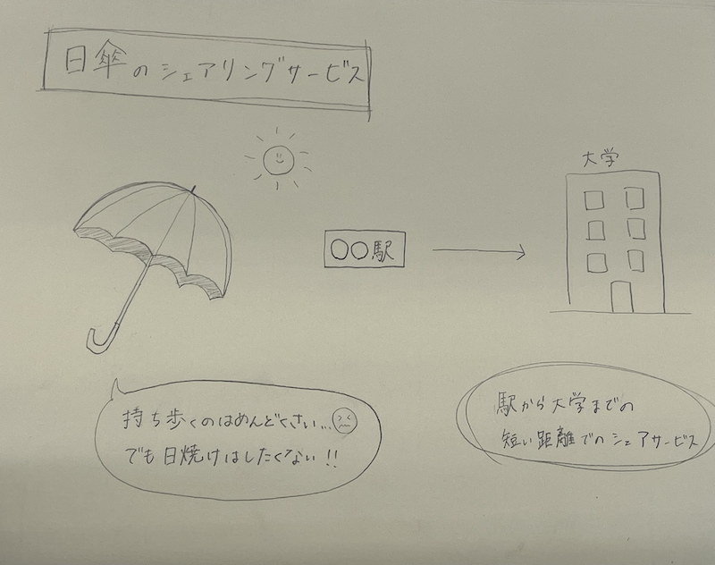

Project Note
概要

私たちの班では、新しいシェアリングサービスについて考えました。
【 日傘のシェアリングサービス 】
日傘を持ち歩くのはめんどくさいけど、日焼けは絶対にしたくない！！
そんな悩みを叶えるために日傘のシェアリングサービスがあればいいと考えました。
駅から大学までの短い距離の中でシェアすることができれば借りるのも返すのも楽で便利だと思います！
プロセスメモ
■ は考えないといけないこと
● は具体的にやること
→ はやったこと
✔️日傘につけるQRコードの制作
■QRをシールにするのか、キーホルダーにするのか
●アクリルのキーホルダーを作る！可愛いデザインにする
→透明のアクリル素材をカッティングした